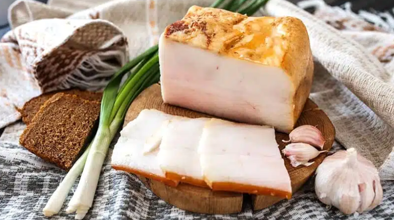

Ukrainian Salo

Salo is a famous traditional Ukrainian food, made of cured pork fatback or boneless pork belly, usually without lean meat and skin. It’s also known as lard, however, salo is not melt down.
Ukrainian Salo ingredients
These are the ingredients you’ll need to make it:
- Salo: To make salo take cuts of 500g fresh fat with skin of a pig.
- Garlic: You’ll need 5 to 10 garlic cloves.
- Salt: Use usual culinary salt.
- Black pepper: Use usual culinary salt.
How to make Ukrainian Salo
To make THAT salo you need to follow next instructions:
- Get one 500g of salo (buy it or take cuts of fresh fat with skin) and make cuts in it and set aside.
- Peel cloves of garlic and smash them in the bowl
- Get THAT bowl and mix THAT SMASHED garlic with 4-5 spoons full of salt and some black pepper.
- Apply mixture you`ve got to salo and apply it to the cuts in it.
- Put that salo into glass jar, close it and keep it in refrigerator for 3-4 days
- Take salo from refrigerator and clean it from excessive salt.
- Cut salo into thin layers and taste it.